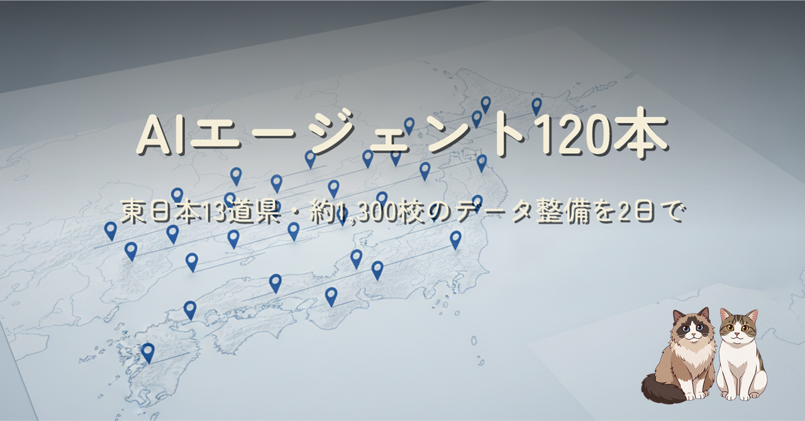

13道県、1,294拠点、2,121学科。AI のサブエージェントを約120本走らせて、学校選び地図サービスの東日本データ整備が2日で終わりました。モデルの配役でコストと品質を両立させた設計と、多段パイプラインが自分でミスを見つけ始めた話の振り返りです。
作業者は人間1人、手はぜんぶ AI。指揮1本の下に「調査は数、検査は安く、判断は賢く」とモデルの役割を切り、県ごとの4段パイプライン（全校リスト → ブロック並列調査 → 統合と機械検査 → 推計・実績収集）で回した記録です。データソースは公的資料のみという規律を4重の機械チェックで守り切り、境界で消えた学校や同名校の衝突といったミスを、後工程の別ソース照合が勝手に拾ってくれる構造になっていました。途中で偏差値推計をやめて「公表された入試の事実データ」を主役にした方針転換も含めて、詳しくは本文をどうぞ。